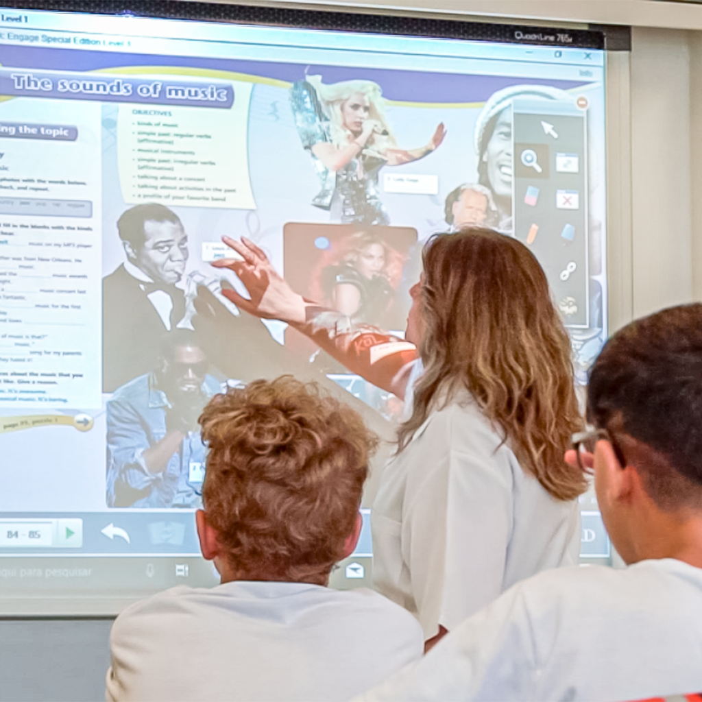

Se existem duas áreas que podem caminhar cada vez mais próximas, são as de educação e de tecnologia. A constante atualização de ferramentas tecnológicas permite sua aplicação em métodos de ensino capazes de aproximar ainda mais os alunos de professores e de instituições, proporcionar experiências imersivas e viabilizar o ensino híbrido ou remoto, o que facilita o acesso dos alunos, entre outros diversos benefícios.
Imagine, por exemplo, um estudante de medicina acompanhando uma cirurgia de forma remota, ou alunos de geografia e história conhecendo diferentes museus e localidades no mundo.
Todas essas situações já são possíveis graças ao uso da tecnologia na educação. Isso também traz vantagens para as instituições de ensino, como a possibilidade de acompanhar individualmente cada aluno e personalizar a sua experiência, conforme suas necessidades.
O termo tecnologias digitais no meio educacional se refere a uma série de inovações que podem ser utilizadas dentro e fora da sala de aula, contribuindo para o aprendizado dos alunos ao tornar as práticas de ensino mais eficientes.
clique aqui para acessar o site

Você sabe o que é tecnologia digital na educação? As inovações tecnológicas transformaram a forma como nos relacionamos com o mundo e a educação é umes, a melhoria das habilidades na busca por informações e o acesso a conteúdo diversos e atualizados.
A inclusão de tecnologia digital na educação tem proporcionado uma série de benefícios para o processo de aprendizagem, como a criação de aulas mais interativas e dinâmicas, aumento da autonomia dos estudantes, a melhoria das habilidades na busca por informações e o acesso a conteúdo diversos e atualizados.
Isso quer dizer que a tecnologia digital na educação pode auxiliar na personalização do aprendizado para que cada estudante desenvolva suas habilidades e competências de forma individualizada e adaptada às suas necessidades.
Através de ferramentas digitais, é possível criar experiências de aprendizado mais imersivas e interativas, que estimulam a participação dos alunos e tornam o processo de aprendizagem mais eficiente e prazeroso.
Dessa forma, as instituições de ensino estão investindo em tecnologia digital na educação para aprimorar o processo de aprendizagem dos estudantes. Afinal, a combinação de tecnologia digital na educação com objetivos pedagógicos pode potencializar o ensino, tornando mais assertivo para os estudantes.
Entre as diversas opções de tecnologia digital na educação utilizadas para alcançar esse objetivo estão:
Mas é importante ressaltar que a inclusão de tecnologia digital na educação deve ser acompanhada de um plano de ensino da turma. Ou seja, é essencial que os professores planejem assertivamente a relação de cada tecnologia digital na educação com os objetivos independentemente do nível de ensino escolhido.
Dessa forma, as atividades serão realidade de forma integrada para tornar o ensino dinâmico e interativo com foco no desenvolvimento dos estudantes.
Diante da importância e do crescente uso das tecnologias educacionais, as instituições de ensino têm a responsabilidade de capacitar os professores para uso de forma efetiva na sala de aula.
Para isso, é necessário oferecer cursos de formação continuada com informações específicas sobre cada tecnologia digital na educação e sobre a usabilidade com os estudantes.
O uso de tecnologias digitais na educação de forma efetiva deve considerar que os professores e educadores estejam em um espaço colaborativo para troca de ideias e suporte em caso de dúvidas ou dificuldades.
Dessa forma, eles se sentirão seguros para propor ideias e soluções para o tornar o ensino mais inovador.
Além dos professores, os estudantes e seus responsáveis também devem estar envolvidos no processo de inclusão de tecnologia digital na educação.
Sendo assim, eles poderão compreender os benefícios e até mesmo contribuir com sugestões de atividades, equipamentos e recursos para a transformação tecnológica.
Outro ponto importante é escolher empresas confiáveis para o investimento em tecnologia digital na educação. Antes de fechar um contrato, é necessário questionar sobre os serviços de capacitação para o uso da ferramenta, assistência técnica e qualidade do produto.
Por fim, é crucial que a inclusão das novas tecnologias na educação esteja integrada ao plano pedagógico da sala de aula.